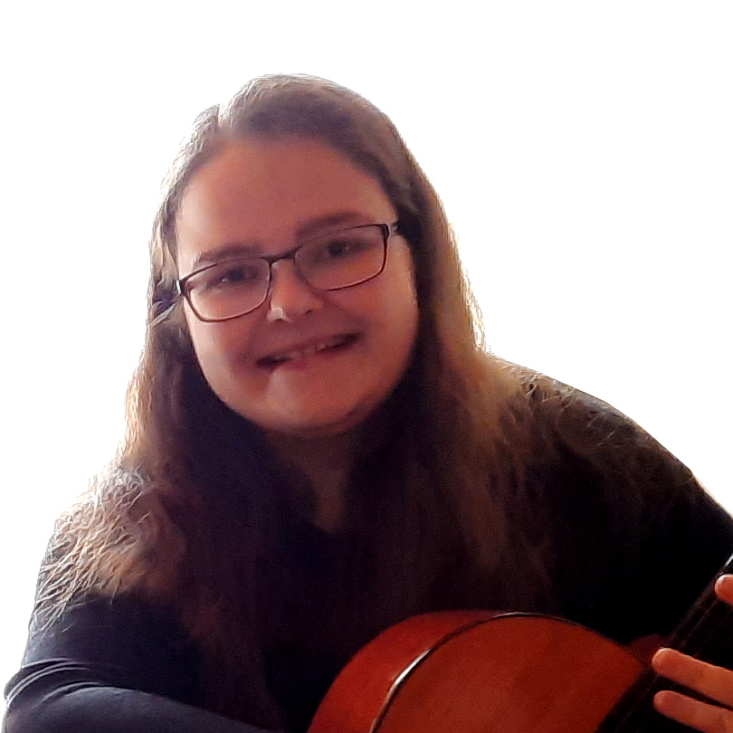

Blanka Bartoňová
 Již na základní škole jsem měla zájem o IT a uspěla jsem při přijímačkách do výběrové třídy (Základní škola Nové Město na Moravě se specializací na výpočetní techniku). Dokonce jsem nyní na jaře zjistila, že jeden z mých prvních počinů o složení webové stránky bartonka.wz.cz z druhého stupně ZŠ je stále naživu, a to již od 21. 11. 2005, což mi udělalo radost.
Gymnázium a jiné zájmové činnosti mou zálibu v IT mírně upozadily a již jsem se mu věnovala pouze okrajově. Po studiích v Brně na Masarykově univerzitě (muzikologie, management, učitelství) jsem se přestěhovala do Českých Budějovic. Stejně jako na jiných pozicích v Brně a i při pomoci na univerzitě, jsem měla možnost pomáhat firmám, oddělením, pedagogům či rodině s obecnými technickými problémy týkajícími se IT (weby, HW, SW, dokonce i technické sítě). Nejen díky vlně koronaviru bylo těžší si v novém městě najít místo v kultuře, a tak jsem své obzory rozšířila opět i na oblast, která mě baví a uplatnění je v ní širší.
V posledních dvou letech jsem se tedy měla možnost věnovat několika e-shopům na různých řešeních, single i multi page webům, a to nejen z hlediska úpravy obsahu a struktury, ale také třeba z hlediska SEO, marketingu, copywritingu, apod. Měla jsem možnost získat také znalosti v oblasti testování webových aplikací, a to manuálního a také v základech automatizovaného.
Tento projekt je pro mě skvělou zkušeností z tvorby webu a těším se na jeho zdárné dokončení a případné vylepšování v budoucnosti.
Kromě mé aktuální pracovní náplně (jednoduché účetnictví, e-shopy) mi můj volný čas zaplňuje digitální akademie, snaha o zlepšení životosprávy (cvičení, Nintendo), králičice Bridget (občas nazývána Satanka), když to je možné, tak návštěvy divadel a kulturních akcí, jinak různé filmy, hudba a seriály (aktuálně New Amsterdam) a samozřejmě v neposlední řadě polovička a rodina.
Budu ráda, když se i v budoucnu dostanu k dalším zajímavým projektům a počinům. Více o mně naleznete třeba na mém Linkedin.